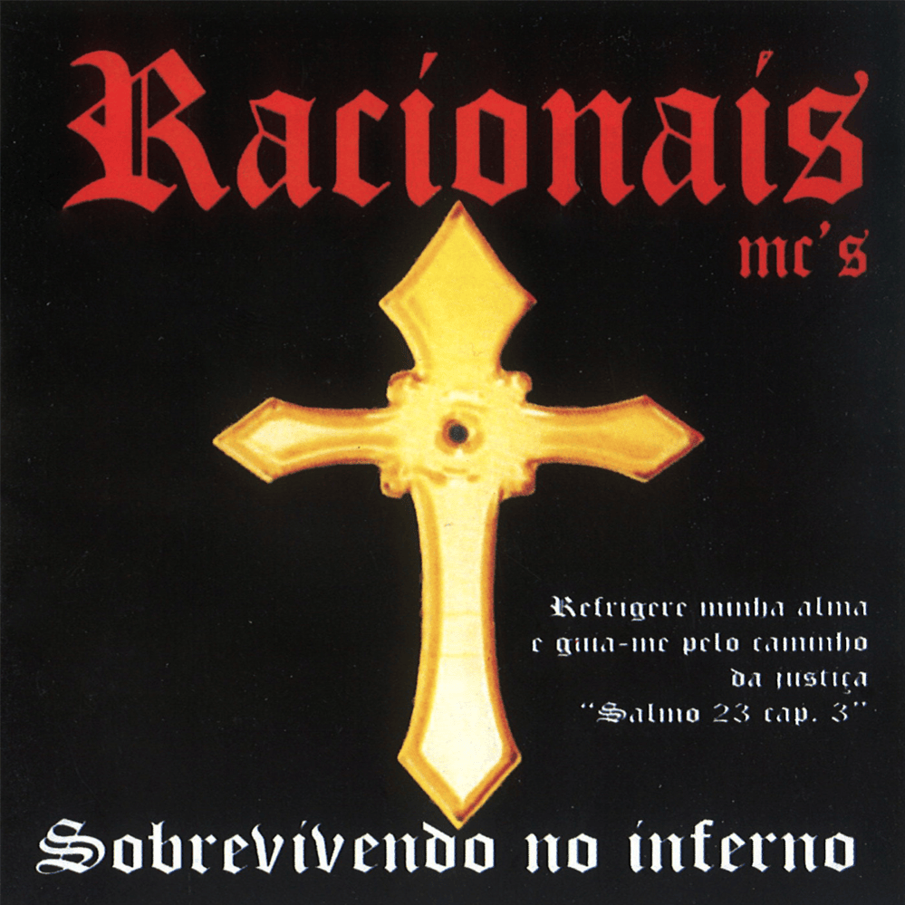

O Charlie Brown Jr. foi uma banda de rock brasileira de Santos, formada em 1992. Sua sonoridade misturava rock, hardcore, reggae e rap, com letras sobre skate, juventude e crítica social. O vocalista Chorão, figura marcante, liderou a banda por décadas. A trajetória foi interrompida em 2013 pela morte de Chorão por overdose. A banda deixou um grande legado, influenciando gerações com sua atitude e autenticidade.
A banda Raimundos surgiu em Brasília em 1987, inovando o rock nacional. Sua marca era a mistura irreverente de hardcore punk com forró, o que resultou em um estilo único apelidado de "forrocore". A banda alcançou o sucesso nos anos 90, com hits como "Mulher de Fases" e "Me Lambe".
No entanto, em 2001, o vocalista Rodolfo Abrantes deixou a banda, causando grande impacto nos fãs. O guitarrista Digão assumiu os vocais, e o grupo continuou sua trajetória, mesmo com mudanças de formação.
Até hoje, a banda Raimundos é lembrada como um ícone do rock brasileiro por sua irreverência e originalidade.
Os Mamonas Assassinas foram um fenômeno meteórico do rock cômico brasileiro na década de 1990. Com um único álbum lançado, conquistaram o país com sua mistura irreverente de rock, forró, sertanejo e outras misturas musicais. Suas letras satíricas e bem-humoradas, combinadas com performances irreverentes, garantiram um sucesso avassalador em pouco mais de oito meses. A trajetória da banda, formada pelos talentosos músicos Dinho, Bento Hinoto, Júlio Rasec, Samuel e Sérgio Reoli, deixou uma marca duradoura na cultura brasileira. Contudo, esse percurso foi tragicamente interrompido em 1996, quando um acidente aéreo ceifou a vida de todos os integrantes. Apesar da curta carreira, o legado dos Mamonas perdura, sendo lembrado até hoje pela alegria e ousadia que trouxeram à música nacional.

Racionais MC's é um influente grupo de rap brasileiro, formado em 1988 por Mano Brown, Ice Blue, Edi Rock e KL Jay, que retrata a realidade da periferia de São Paulo. Com letras contundentes sobre racismo, desigualdade social e violência, o grupo dá voz às minorias e promove a conscientização sobre as dificuldades enfrentadas. A obra do grupo, com álbuns aclamados como Sobrevivendo no Inferno (1997), revolucionou o rap nacional e moldou a história da música brasileira. Recentemente, em reconhecimento ao seu impacto social e cultural, os membros foram agraciados com o título de doutores honoris causa pela Unicamp.